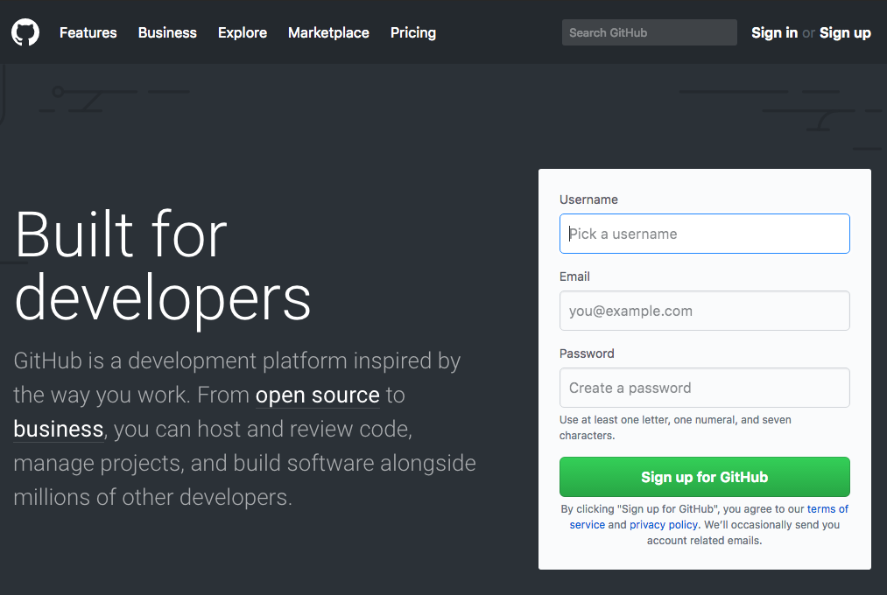

Getting started
Using GitHub as a publishing tool helps us do a few things:
- Learn git! Git is a valuable tool.
- Collaborate easily.
- Publish simple webpages online for free.
Using GitHub as a publishing tool helps us do a few things:
Here's the CEO of GitHub.
Sign up at GitHub.com
Use an email you can check, you will have to confirm your email.
We are going to start with the GitHub Desktop client to learn the basics of git and Github.
The computer lab computers should have GitHub already installed but it may be an older version. If that's the case go to the following link and download a new copy. Place this copy on the
Click
Use the same email address you used to create your account.
Choose the
We already have a folder for our classwork, so type the name of the folder into the Name box and choose the
One of the features of the GitHub Desktop client is that it will automatically detect if this is a new repo and create an
Because this is our first update to the git repository all of our files are green meaning they're new changes to be added. These are the
You may have a file or two called ".DS_Store". We don't want to save these files because they're only used by the Mac OSX system to keep track of changes in the Finder. We don't want to upload them to GitHub because they're not necessary for the site.
Fortunately, git allows us to ignore files in the folder from the repo. In the GitHub Desktop toolbar, select
In Repository Settings we can write in files to ignore. This will create a special file called
Write the commit message "inital commit" and then click the commit to master button.
Once your first commit is made, you can click the
We're going to use GitHub Pages to publish the repo.
We'll come back after that and make some changes to the repo.

Return to GitHub.com in your browser. You will see the new repo. You can click on it to see your files and administer the repo.
Navigate to the Settings tab on the GitHub repo page and scroll down to the to the GitHub Pages section. Click the dropdown under
Your website will be published at the URL username.github.io/reponame where your username is you GitHub account and the repo name is whatever you named your repository.
Once you upload your work to GitHub you can download it to any computer you may want to work on outside of the classroom. You clone a copy of your code repo using the GitHub Desktop. This is similar to downloading via FTP, but in this case you have a copy of your entire repo, with all of the changes you made, so you can sync your changes from the classroom and home computer.
Download GitHub Client on your computer and sign in just at the beginning, but this time, choose
Enter the location of the repo using the username/reponame syntax. Create a folder on your computer where the repo should go and add as the Local path. Your folder should be but doesn't have to be the same as your repo name.
Now that your home and lab computer copies of your projects are synced, whenever you open the GitHub Desktop client you will see the option to
Once you fetch, you can begin editing your new files. If you decide to make changes, git will keep track. When you return to the GitHub Desktop you will see those changes.
If you are happy with these changes you can commit them. This creates a new snapshot the git will remember. Remember to make a good commit message so you remember what the changes did.

Once you are done committing changes make sure to